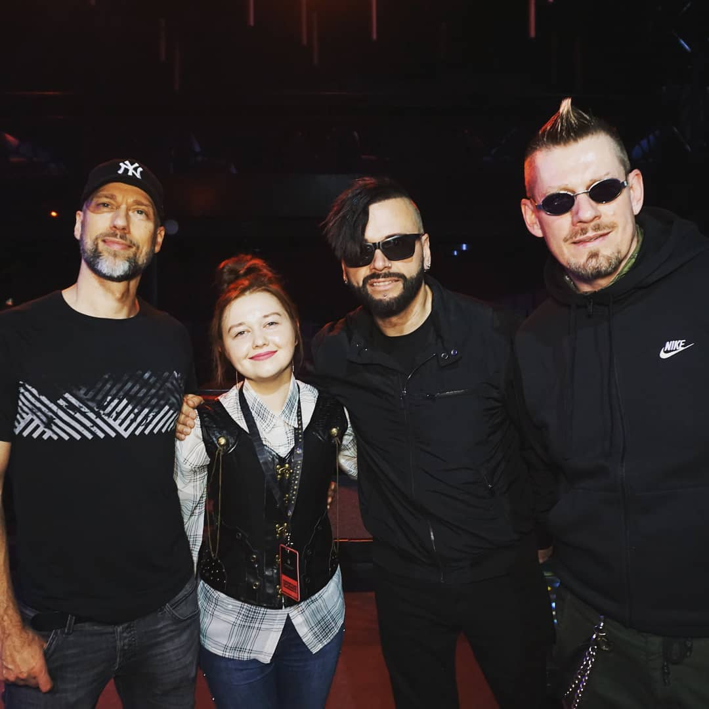

Some words about me...
Я народилася у чудовому місті Івано-Франківськ 24 лютого 1993 року. В дитинстві відвідувала гурток естрадних
танців та з захопленням вивчала інземні мови. Для того, щоб постійно поглиблювати і розвивати комунікативні
здібності з англійської мови,
пішла до спеціалізованої школи №11. Там мабудь ще більше ніж англійську, я полюбила французьку мову і
досягла значних успіхів у її вивченні. У старших класах зацікавилась біологією та хімією, тому вирішила
спробувати свої сили одразу у двох
університетах.
У 2010 році вступила до Івано-Франківського національного технічного університету нафти і газу на
спеціальність "Документознавство та інформаційна діяльність". Там я здобула базові навички роботи з
комп'ютером, в межах навчальної програми створювала
елементарні html-сторінки, освоїла загальні підходи до роботи з css та javascript. Покращувати знання з
англійської мови нам допомагали запрошені до співраці представники організації Peace Corps, (а також велика
кількість курсових робіт з
перекладу та неймовірна кількість практичних завдань, котрі робити доводилось цілими ночами). Період
навчання у ІФНТУНГ був неймовірно яскравим і дуже цікавим.
У 2011 році я вступила до Івано-Франківського національного медичного університету на фармацевтичний
факультет (заочна форма навчання). Було доволі складно навчатись дистанційно 80% часу, але цінні знання
дозволили успішно працевлаштуватись і
щодня отримувати задоволення від роботи.

Travelling
По натурі я жабка-мандрівниця. Обожнюю пізнавати нові країни, звичаї та традиції. На сьогоднішній день
відвідала немало країн Європи, але не збираюсь зупинятися на досягнутому. З усіх країн найбільше
запам'яталися Нідерланди: Амстердам – миловидними
мостами, затишними вуличками та величезною кількістю квітів; Роттердам – вражаючими зразками сучасної
архітектури, це місто своїм ритмом більше нагадує столицю; Делфт – осередок пам'яток культури,
середньовічних споруд і резиденцій королів.
Своєю різноманітністю та багатогранністю Нідерланди глибоко вразили мене, тому я сподіваюсь ще не раз
відвідати цю неймовірну країну.
Music
Життя без музики — то, мабуть, не життя. Іноді мені здається, що без музики я б просто не змогла повноцінно
існувати. Та й здається, що немає людини, яка б байдуже ставилася до неї, адже в ній є все. Думаю, що зі
мною погодиться більшість, якщо
я скажу, що вона допомагає долати повсякденні труднощі, вона може розрадити у скрутну хвилину та підняти
настрій, коли це потрібно; вміє заспокоювати і втішати, як ліпша подруга чи друг. Недарма ж говорять, що
музика — це спільна мова, яку
розуміють на кожному континенті, у кожному куточку землі. Тому, це та універсальна річ, яка завжди згуртовує
й об’єднує навколо себе усіх жителів цієї планети.

Reading
Обожнюю аромат "свіжо купленої" книги. Чисті, незаймані чужим оком сторінки шелестять,ніби листя в осінньому
парку. Напевно, найприємніший звук для мого вуха. Читаєш, смакуєш кожне слово, розкладаєш на полички думку автора, а потім складаєш в одне, так краще
розуміється. О! Ці змішані відчуття, коли дочитуєш чергову книгу. Водночас відчуваєш насолоду і жаль.
Ти ж разом з героями переживав кожну подію, описану автором, і це все закінчилося! Але відразу береш в руки
нову книжку і поринаєш в інший світ. Люблю читати. Книга відіграє величезну роль в житті кожної людини.
Розмовляючи з людиною, ти можеш оцінити її рівень освіченості і як часто вона читає книжки. У неї багатший
словниковий запас, милозвучніша мова. Навіть спілкування стає приємнішим.
Коли книга є твоїм супутником з дитинства,в дорослому житті набагато легше знаходити вихід з будь-якої ситуації. Які чудеса творить книга. У ХХІ столітті читати модно. Нехай і з різноманітних планшетів чи комп'ютерів, але молодь читає. Що було не типово ще кілька років тому. І це надзвичайно приємно не тільки мені, але і всьому людству. Читаючи, люди розвиваються. І всі це розуміють.
Перегортаючи останню сторінку книжки, ми повинні збагачуватися. Новими знаннями, досвідом героїв,порадами автора, які нерідко потрібно прочитати між рядками. Не кожному це вдається, але в читанні, як і в будь-якій справі, потрібний певний досвід.Після однієї прочитаної книги ніхто не стане розумнішим. Але після десятка мудрих книг, достойних уваги, наш словниковий запас обов'язково збільшиться. Що вже є цінним для нас. Це ніби маленька перемога. А доводити самому собі, що ти чогось вартий,- дуже приємно. Підніматися у своїх очах щоразу на сходинку вище і розуміти, що можеш собою гордитися. І цим ми завдячуємо книгам. Отже, читати- це не нудна справа. Це корисно і пізнавально.